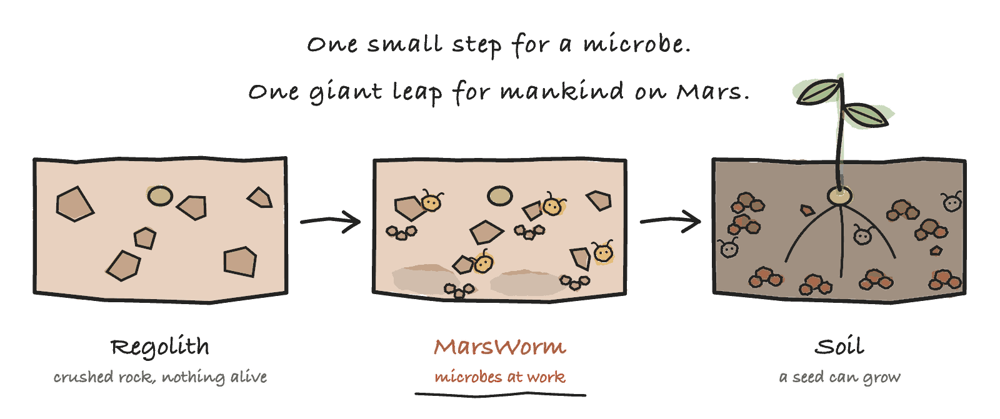

MarsWorm

Designing a microbe that could do an earthworm’s job on Mars.
MarsWorm stands for Making Arid Regolith into Soil, With Organisms Redesigned for Mars.
A student project for the 3M Young Scientist Challenge 2027.

The problem
Mars has dirt, not soil. This project looks for a biological answer: microbes that turn Martian dirt into soil as fertile as Earth's, and can live there while they do it. The full problem →
One project, more than one answer
Each time we tested a design, it changed. More than one answer came out, each strong in some ways and weak in others, so we keep all of them. Every version is a complete site of its own. They are in the order they were thought of, so the table reads as the journey: what we tried first, what testing did to it, and where that left us.
| Version | What it is | Strong points | Weak points |
|---|---|---|---|
| V1. The bioengineered organism | One microbe redesigned with 37 real genes, to do an earthworm's job and survive Mars on its own. | Answers the original question. One living thing, no machinery. | Cannot be built yet. Failed in simulation. |
| V2. Earth microbes at work | Three ordinary Earth microbes and a box of Earth worms, inside a Martian dome. No genetic changes. | Every piece exists. Can be built and tested with little effort. | Needs hardware from Earth. Only works inside a Martian habitat. Does not design a new organism. |
| V3. Earth microbes, no plumbing Newest | The same idea with the plumbing taken out. Ordinary Earth microbes work in the dirt itself, one of them adapted to do the job the hardware used to do. | No tanks, no wash, nothing to fly but a gas line. Every stage checked in a model. | Adds one gene, so it is no longer modification-free. The bed needs a lid and a vent. Nothing has been grown yet. |
Listen instead
The whole project is also a short podcast series: five episodes of about five minutes, two hosts, starting from why Mars has no soil. A quicker way in than reading, and it points back here for the detail.